Outremer
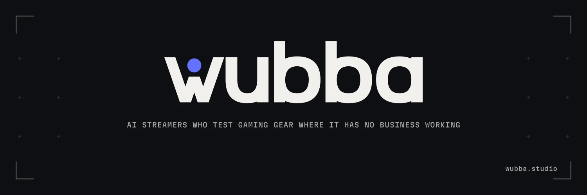
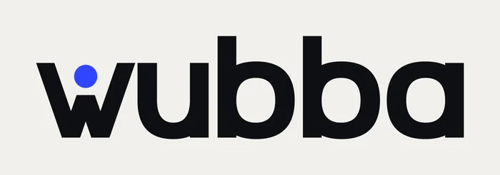
Un bleu pur et froid, loin du rouge sportif ; il reste net à 16 px sur le noir comme sur le papier.
wubba · direction A · couleur de marque
Le même logo, douze couleurs. Pour chaque option : la bannière X, le logo sur fond clair et sombre, l'icône, et le favicon rendu à 16, 24, 32 et 48 pixels réels. Réponds-moi simplement avec le numéro.
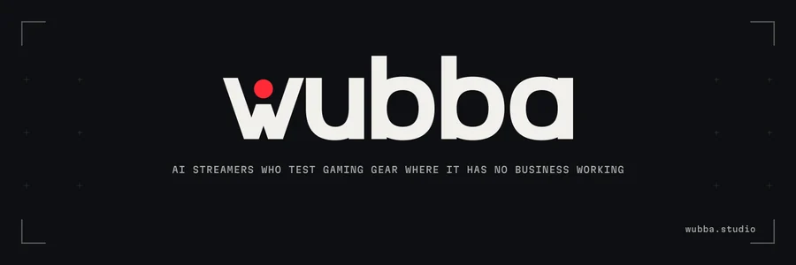


Un bleu pur et froid, loin du rouge sportif ; il reste net à 16 px sur le noir comme sur le papier.
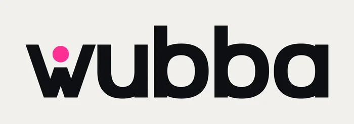
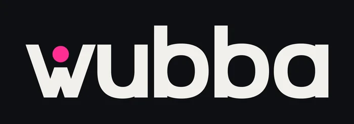
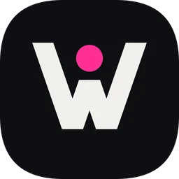
Presque personne ne l'utilise dans le matériel gaming ; il garde l'énergie d'un voyant sans être rouge.
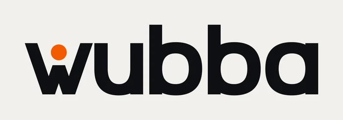
Le voyant devient ambre, chaud et visible ; mais sur le noir, de loin, il tire encore vers le rouge, et SteelSeries est orange.
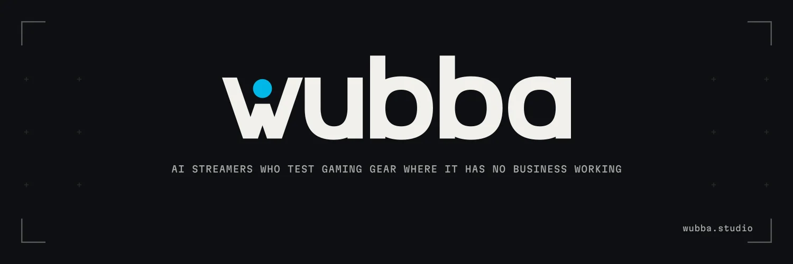
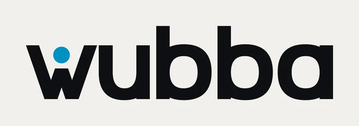
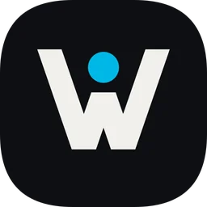
La couleur des écrans et des câbles lumineux ; attention, plusieurs marques de périphériques jouent déjà dans ces bleus.
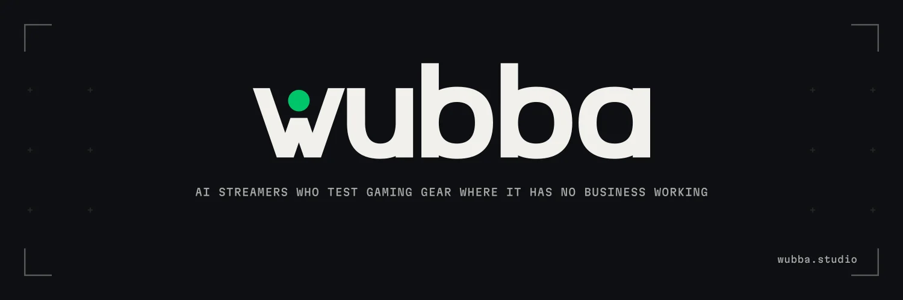
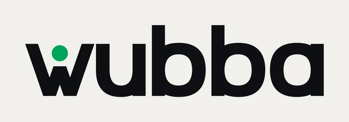
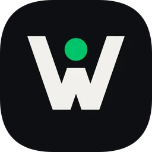
Le point devient le voyant « en ligne » d'un profil ; attention, Razer, Xbox et Nvidia sont tous verts.
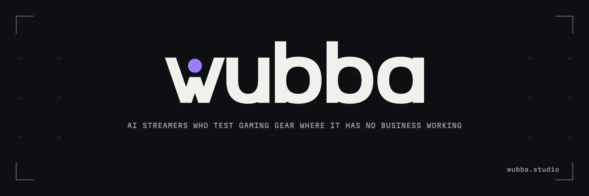
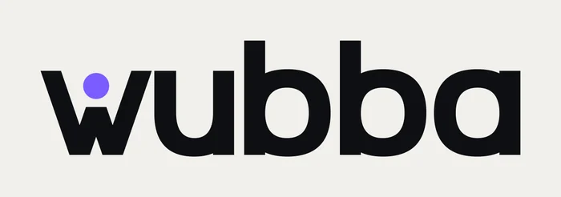
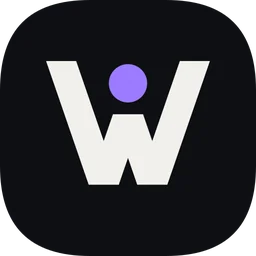
Doux et inattendu ; sur fond sombre, il se rapproche du violet de Twitch.
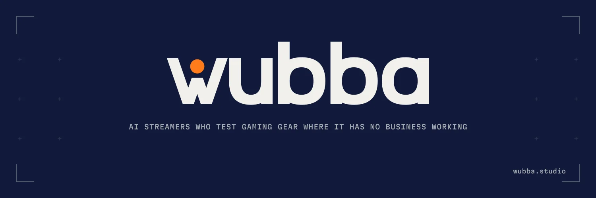
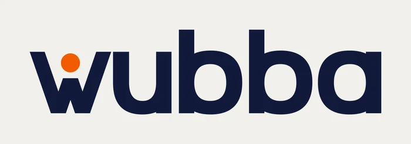
Le noir disparaît : un bleu nuit profond porte la marque, le point orange s'y détache à 6,5:1.
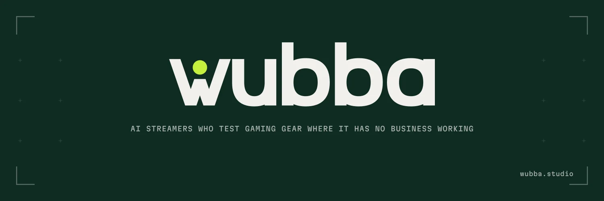
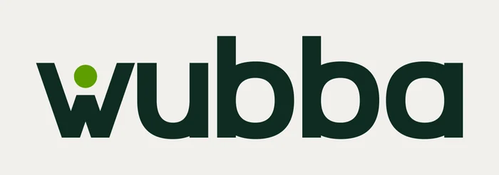
Un vert forêt presque noir et un point lime : le dehors, le terrain où le matériel n'a rien à faire.
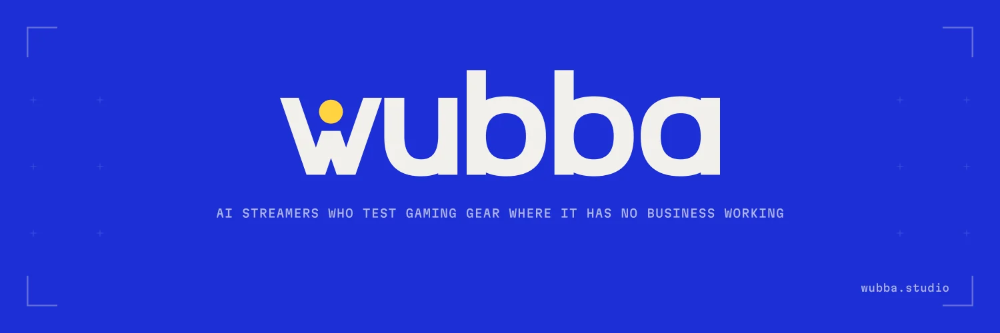
La plus franche : un fond bleu vif qu'on repère de loin dans un fil, le point jaune comme un soleil. Bleu et jaune ensemble rappellent un peu IKEA.
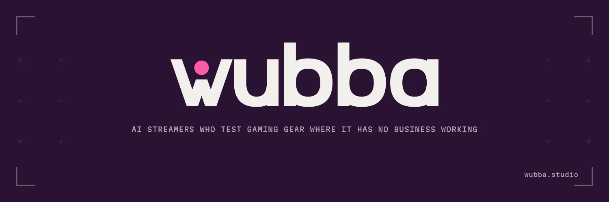
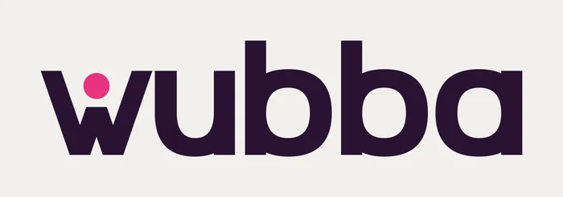
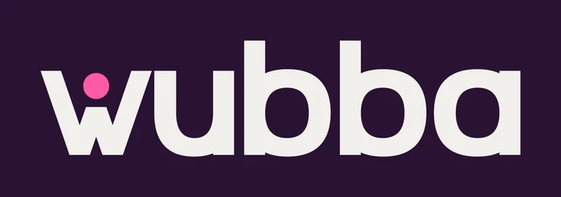
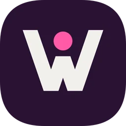
Sombre et chaude à la fois ; plus lifestyle que tech, à l'opposé des marques de matériel.
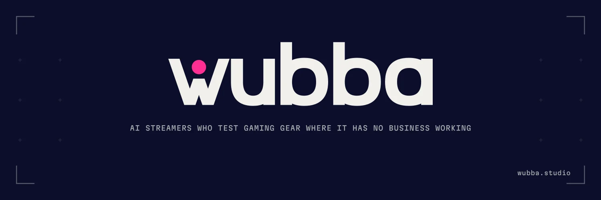
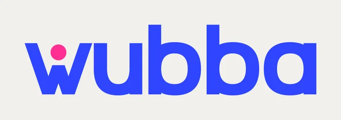
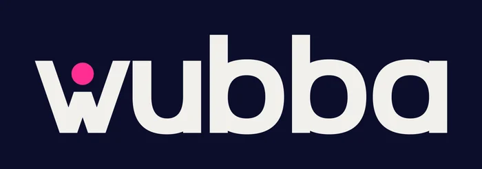
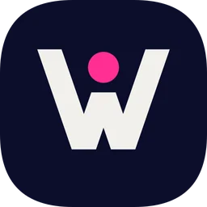
Deux couleurs vives au lieu d'une : le mot en bleu, le point en rose. La plus joueuse.
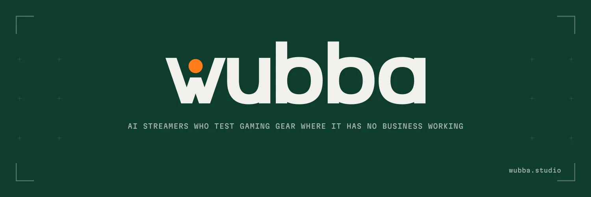
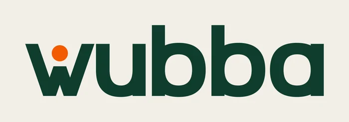
Un vert profond et un orange de balisage : l'équipement de plein air plutôt que le bureau gamer.
Les couleurs viennent seules : le dessin du logo ne bouge pas. Une fois la couleur choisie, on passe à la typographie.